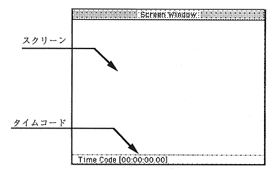

Object placement area (VDP1)
This area is used to place picture objects registered in the object window. Objects are displayed as sprites using VDP1. Arrangement has 32 areas from 5 to 36, and when picture objects to be displayed in the same time overlap, the smaller number is displayed in front.
Screen window

Screen
Displays the created scenario.
Time code
The time code corresponding to the scenario time axis is displayed.